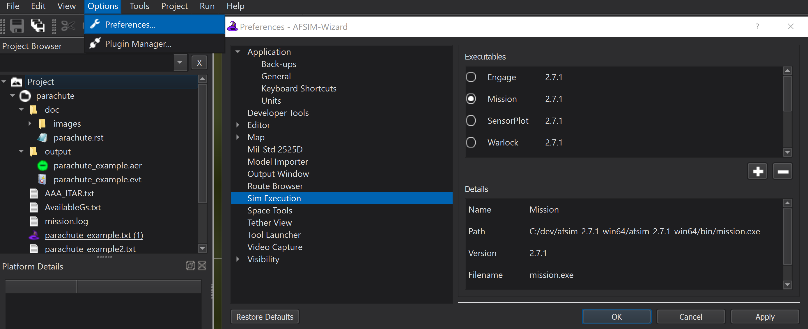
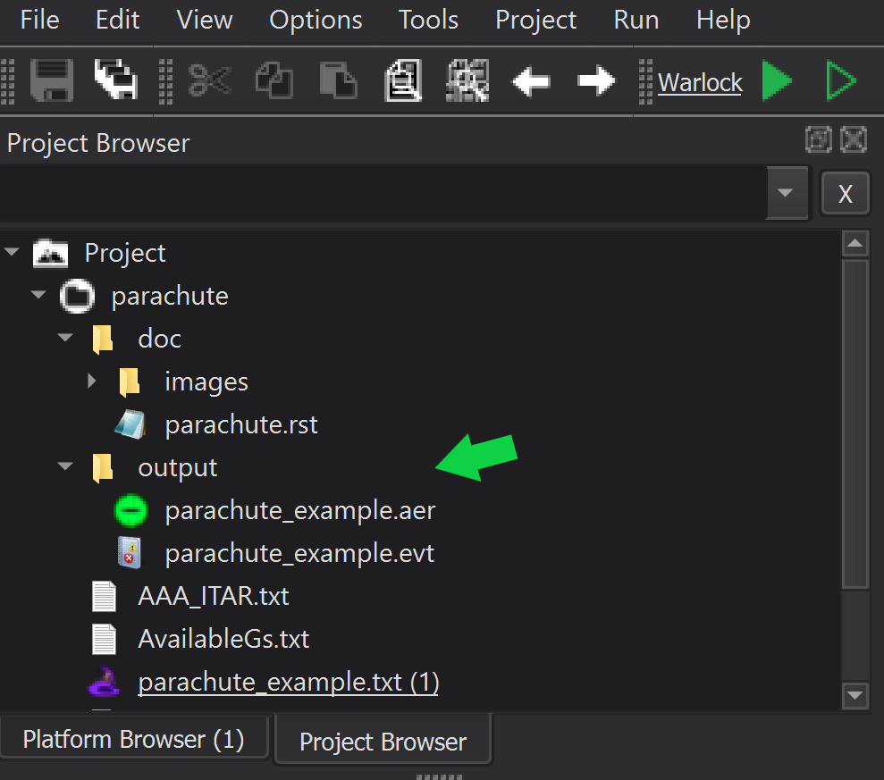

Wizard¶
Wizard is AFSIM’s integrated development environment. It provides both visual and text based utilities to streamline scenario development and execution.
Wizard supports embedded execution of text based WSF applications such as Mission and Sensor Plot, and provides shortcuts to conveniently launch other WSF visual applications such as Warlock and Mystic.
Core Wizard utilities include:
Scenario visualization and editing through the Map Display
Scenario file editing directly through Wizard’s built-in Text Editor
Customizable syntax highlighting and auto-completion for scenario files
Embedded execution and console based output display of WSF console applications
Embedded linking to AFSIM documentation directly from the text editor
Quick Start¶
Wizard (wizard.exe) may be launched from the desktop shortcut, included with default installation, or directly from the command line. If launched from the command line, a project file name may be included as an argument.
Note
If Wizard does not launch as expected, ensure that the AFSIM installation path is set in the system environment variables. The Wizard executable (wizard.exe) is located in the ‘/bin’ directory of the AFSIM release file structure.
Launch Wizard With a Project File¶
To start Wizard from the command line, provide the following command:
>> wizard.exe <file_name>.txt
or
>> wizard.exe <project_name>.afproj
Complete the steps below to open the parachute demo from the command line:
Navigate to the parachute demo working directory.
>> cd demo/parachute
Launch Wizard with the parachute_example.txt file as an argument.
>> wizard.exe parachute_example.txt
The Application Layout opens when Wizard is launched. The following list is a subset of available components within the layout:
Menus
Toolbar
Project Browser
Platform Options
Central Displaying
Output Panel
Platform Browser
{kind=link}
Tip
Additional Wizard documentation is available through the Help Menu option.
{kind=link}
Launch Wizard Without a Project File¶
If Wizard is launched on the command line without specifying a project file, or launched from the desktop shortcut , the Wizard Startup window will appear and prompt the user for a starting scenario, or allow the user to choose from a list of built-in demo scenarios.
The Wizard “Startup” window will prompt the user to specify a Project file using one of the following methods:
Enter a project filename in the Drag and drop or enter a scenario file(s) window and click Open
Click Browse and navigate to the project file location, select the project file, and click Open
Click Demo Browser and open the desired project from the available list of Demos

Complete the steps below to run Wizard without specifying a project, and use the “Startup” window to select the parachute demo from the Demo Browser:
Launch Wizard from the desktop shortcut, or from the command line without specifying a project file.
>> wizard.exe
At the Startup window, click Demo Browser.
Scroll through the list of Demos and click Open Project on the ‘parachute’ demo.
{kind=link}
Closer Look¶
Mission, Warlock, and Mystic are three primary WSF applications, accessible from Wizard, respectively, each is used to view scenario output, affect behavior of simulated platforms during runtime, and visually observe simulation results and statistics. Each application is discussed to in detail to follow.
Executables Available from Wizard¶
Executable applications available within Wizard (such as Mission and Warlock) are located in the Wizard Simulation Manager.
The Simulation Manager is viewed by accessing the Preferences dialog from the Options menu and clicking “Sim Execution”.
{kind=link}
Wizard Displays and Controls¶
Wizard’s central Map Display provides the user the ability to alter the geographic view to enhance visualization when building a scenario. The Map Display may be be adjusted using the following mouse controls:
‘Left-Click + Drag’ - Translates the map with the mouse cursor.
‘Double-Left-Click’ - Zooms the map, centered on the mouse cursor.
‘Mouse-Wheel’ - Zooms the map in and out, centered on the mouse cursor.
‘Middle-Click + Drag’ - Rotates and tilts the view.
{kind=link}
Tip
Familiarity with the Map Display and mouse controls is necessary for the completion of subsequent modules.
Scenario Output Available from Wizard¶
Wizard output detail is controlled with commands written within the scenario.
Common output formats are as follows:
Text based console output displayed directly in Wizard’s Output view.
.csv and .evt Event Output files
.log files which provide detailed information regarding scenario execution in various WSF tools
.aer (AFSIM Event Replay) files which may be provided to Mystic for simulation visualization and analysis.
Event, Log, and AFSIM Event Recording files are saved by default into the working directory, and are visible in Wizard’s Project Browser after output enabled scenarios are simulated.
Output files can be viewed by accessing the Project Browser from the Wizard View menu and opening the appropriate file in the output folder.
{kind=link}
AFSIM scenario development instructions and details concerning the use of other WSF applications are provided in subsequent modules.